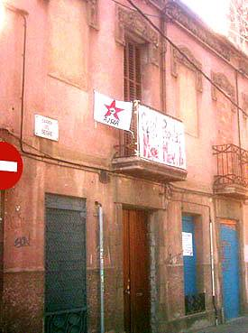
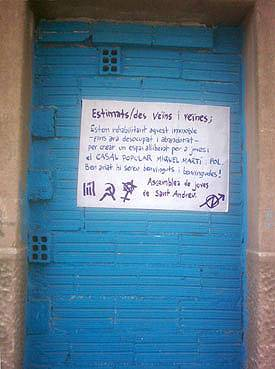
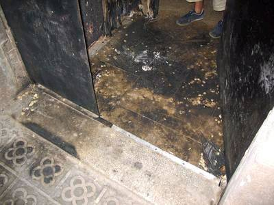
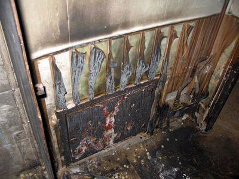

Casal Popular
Miquel Martí i Pol


Per un Sant Andreu viu i combatiu, fora especuladors del poble!
Ni l'especulació ni la repressió aturaran les nostres lluites!
Casal Popular Miquel Martí i Pol
carrer del Segre, 56